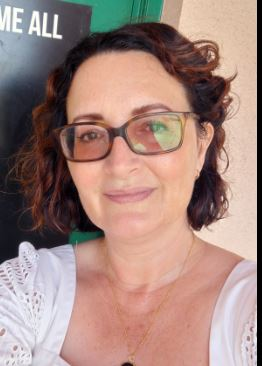
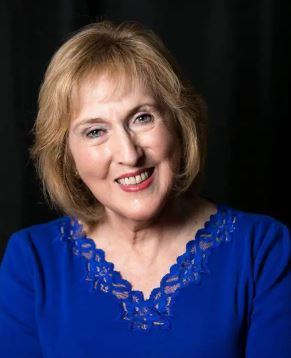

Laboratory Theater History & Founders
The Laboratory Theater of Florida began in 2008 as a dream of founders Annette Trossbach, Nicole Rizley, and Louise Wigglesworth. The theater began as a community theater with the goal of offering new and cutting edge plays that would expand the consciousness of the southwest Florida community and bring people together in the service of greater understanding, as well as regularly offering classics.

Annette Trossbach
Founder
Classically trained at East 15 drama school in London, UK. She feels strongly about presenting complex works and making them widely accessible, especially those with ethical and social challenges.

Louise Wigglesworth
Founder
Studied theatre and playwriting at Catholic University in D.C. She has been an actor, director, playwright, and teacher of those arts all her working life.

Nykkie Rizley
Founder
Founding member and Vice President of The Laboratory Theater of Florida, she is an active community member, devoted mother, and dedicated theater advocate.